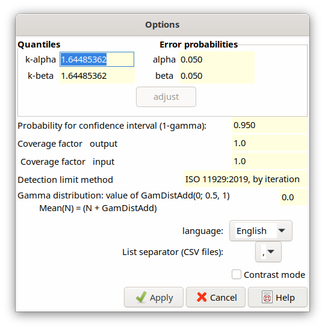

2.6. Options dialog - Presetting¶
This dialog allows the definition of the following parameters used in the calculations of Decision threshold and Detection limit:
Quantiles of the normal distribution, \(k_{1 - \alpha}\) and \(k_{1 - \beta}\), and their associated probabilities for the errors of the first and second kind, \(\mathbf{\alpha}\) and \(\mathbf{\beta}\), respectively. The program only works with the values of the quantiles \(k_{1 - \alpha}\) and \(k_{1 - \beta}\); it is, however, possible to define first the error probabilities from which in turn the quantiles are determined then.
Presetting in the case of preparing a new project:
k-alpha = 1.644854, alpha = 0.05k-beta = 1.644854, beta = 0.05.If a quantile value is modified, the associated probability value must be changed; this is indicated by disabling its editing and the button “adjust” (above) becomes activatable. In the case of modifying a probability value first, the procedure is just vice versa. By clicking the “adjust” button, the other associated value is adjusted; without this adjustment the dialog cannot be closed.
the method of defining Decision thresholds and Detection limits: only the method of ISO 11929:2019 is available.
For the calculation of the limits of the (two-sided) confidence interval (better: coverage interval), the value of the associated probability \((1 - \gamma)\) is needed, which can be given in the corresponding field. The default value is \((1 - \gamma) = 0.95\).
The value of the coverage factor k is required for calculating the expanded uncertainty, which can be defined in the field coverage factor output. Its pre-set value is 1 (internal variable coverf).
If in a project file the uncertainties of the listed independent input quantities are given as expanded uncertainties, its associated coverage factor needs to be removed while reading them in. This coverage factor can be given in the field coverage factor input. Its pre-set value is 1 (internal variable coverin).
Usually, coverin=1 is applied when working with a project within UncertRadio by dialog. The value coverin=2 probably will be restricted to the case when UncertRadio used in an automated way from within another program. An Excel application prepares a project file filled with data within Excel and calls UncertRadio for evaluating it. If the input quantity uncertainties had been entered in Excel with coverin=2,and the parameter coverin=2 is given in the project file, UncertRadio converts these uncertainties to k=1 by dividing them by the coverin value. The internal calculations are all done with a coverage factor of 1. Just before the output to an external CSV file, which then will be imported by Excel, UncertRadio multiplies the uncertainty values with the value of the parameter coverf, which also has to be defined in the project file.
When using UncertRadio in the automated way, care has to be taken about how to correctly insert the uncertainty values into the project file: refer to Section 2.8.3.
The dialog contains an input field for a variable GamDistAdd. This parameter represents the x in the (N+x) rule for counts or counting rates, between 0 and 1. The values 0, ½ und 1 for GamDistAdd correspond to common priors within a Bayesian view, which are proportional to \(\nu^{- (1 - c)}\), with c=GamDistAdd. For variables for which the (N+x) rule has been selected, a corresponding Gamma distribution is assumed.
c=GamDistAdd |
(1-c) |
mean |
|---|---|---|
0 |
1 |
N+0 |
1/2 |
1/2 |
N+1/2 |
1 |
0 |
N+1 |
The language output within the program and its dialogs and the can be switched between German and English after the program start; the list separator character can also be selected. See also: Country specific parameters.